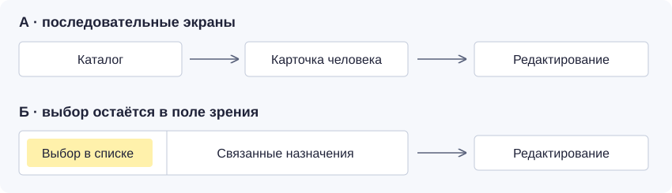

Редактирование в контексте
Открыть карточку из результатов, изменить поле и вернуться к тому же списку. В прототипе изменения живут в открытом окне.
Открыть профиль ↗Два варианта рабочего кабинета школы. Сравните один и тот же экран, затем откройте прототип и пройдите свой обычный сценарий.

А · Бережная унификация Сначала список, затем полная карточка. Больше места для обзора одного набора данных.
Б · Рабочий контекст Выбор и детали видны рядом. Проще переключаться между людьми и работами, пока хватает ширины экрана.
Слева — исходные снимки на тестовых данных проекта. Для А и Б использован один обезличенный набор, чтобы сравнивать расположение и поведение экрана.
Рабочий ритм задают строки времени, границы ячеек и компактная панель команд. В обоих направлениях расписание представлено исходным снимком.
Открыть карточку из результатов, изменить поле и вернуться к тому же списку. В прототипе изменения живут в открытом окне.
Открыть профиль ↗На первом уровне видны состояние подключения и следующее доступное действие. Подробности источника раскрываются по запросу.
Проверить настройки ↗Выберите роль и контрольную дату. Образец для каждой роли фиксирован. Область результата использует существующий визуальный образ Campus.
Открыть preview ↗Светлая боковая панель, тёмный выбранный пункт и жёлтая пиктограмма сохраняют ориентир при переходах.
Выбранный класс, период и запись остаются видны рядом с содержимым. Изменение контекста меняет выдачу.
Оценка, ноль и отсутствие результата различимы без цвета. Матрица сохраняет заголовки и связь с учеником.
Текст сообщает статус. Цвет и форма поддерживают его, включая случаи частичного или устаревшего расписания.
Частые операции завуча начинаются со списка и продолжаются в конкретной записи. В Б соседний контекст доступен при просмотре деталей. Начать стоит с одного законченного маршрута в журнале, затем проверить его на справочнике и профиле преподавателя.
Где выбрать А. При быстром внедрении и редком переключении между записями знакомая последовательность экранов проще в освоении. Из А стоит сохранить прямое открытие подробной страницы на телефоне.
После первой пробы убрали конкурирующие сводки над журналом и отдали ширину оценкам. Компромисс Б — подробности занимают место по горизонтали. При согласовании проверьте, удобно ли на вашем ноутбуке сверять соседние работы с открытой детализацией.
